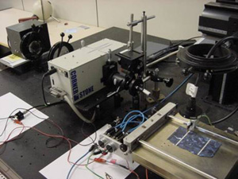
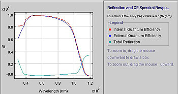

Figure: Equipment for making spectral response measurements with the light
source in the top left corner, the box of filters in the middle that only transmits
a narrow band of wavelengths at a time, optical fibre cables that transmit the
monochromatic light to the cell, and the test equipment for measuring the cell’s
resulting current.
Spectral response tests involve the measurement of the current generated by a solar cell as a function of the wavelength of incoming light. Typical test equipment is shown and described above. At each wavelength, the percentage of incoming photons that successfully generate electron-hole pairs that contribute to the cell’s short circuit current are determined and defined as the quantum efficiency (QE). The internal QE ignores the effect of any reflected light while the external QE is reduced in accordance with the % of reflected light that is subtracted from the IQE value at each wavelength.
Silicon cells do not respond equally to all wavelengths of light. Short wavelengths of light (ultraviolet) are absorbed extremely close to the top surface making the surface recombination velocity, emitter doping and junction depth of major importance. At the other extreme, light with wavelengths > 1 micron are quite weakly absorbed in silicon since the photon energy is quite close to that of the bandgap in silicon. Such photons therefore tend to be absorbed uniformly throughout the material, with approximately half of them therefore generated towards the rear of the cell making the rear surface recombination velocity and bulk minority carrier diffusion lengths of greatest importance. The very best cells have IQE values close to 100% for virtually all wavelengths in the range 0.35 microns to 1.1 microns. In comparison, screen-printed cells tend to have deep and heavily diffused emitters with poor surface passivation that give low QE values for short wavelengths of light. CZ and multicrystalline silicon wafers also have low carrier lifetimes that tend to give poor response to longer wavelengths of light.
All silicon cells have QE values close to zero for wavelengths > 1.1 microns. This results from the fact that silicon is transparent to such wavelengths since the photons do not have sufficient energy to create electron-hole pairs (i.e. break covalent bonds). Below is an example of IQE and EQE curves for a silicon solar cell.

Figure: IQE (red) and EQE (blue) curves for a screen-printed solar cell as
a function of wavelength. The geen curve gives the total reflection as a function
of wavelength.